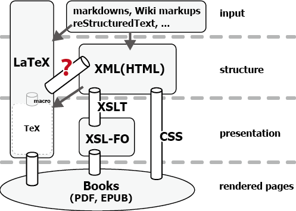

Creating documents can be seen from two opposite aspects; structure versus presentation. In some document systems, they are completely divided into separate layers. For example, XSL [W3C:2006] is the way to define a presentation of XML, which corresponds to the tree structure of a document. Håkon Wium Lie, the father of CSS [CSS:2010], explains this separation in terms of the ladder of abstraction [Lie:2005]. The structural tree of the document locates at the highest abstraction level. Moving downwards on the ladder, the document becomes less and less abstract towards the rendered data. It's hard to climb the ladder without any manual aid. That means, reusing the document in other media requires a lot of handworks.
Funnily enough, this separation is rather vague in LaTeX, despite the fact that LaTeX originally is the structured layer over the lower-level typesetting mechanism provided by the TeX engine. This weak separation sometime causes the ill-reusability of documents written in LaTeX. Especially, if you want to distribute the LaTeX document through the Web, chances are that it is as a rendered PDF.
When it comes to bookmaking, which is our main concern, the abstraction ladder can be depicted as in Figure 1.
Arrows in Figure 1 indicate that the translation or mapping between the formats are achieved by putting some restrictions. In other words, the expressiveness of your document would be limited in accordance with the formats in higher abstraction levels. The left-down arrow from XML to LaTeX, for example, refers to a system that can transform XML files written in some given DTDs or XML Schemas, such as DB2LaTeX [db2latex:2003] (a converter from DocBook to LaTeX) or TeXML [TeXML:1999] (a feasible XML syntax for TeX). In those systems, you can hardly create a book that requires more structural elements than the specifications offer. Similarly, the easy-to-read-and-write input formats like markdowns and Wiki syntaxes narrow the expression of the documents down to their intended use. It can be quite a good for writing and editing the manuscripts, but for supporting a variety of page layouts.
On the other hand, the plumbing pipes connecting different formats indicate that there's practically no restriction to a downward direction. Needless to say, LaTeX is able to produce almost all the possible page designs. That becomes one of the most important reason we'd like to use LaTeX in creating books. The same is true for XSL (including XSLT and XSL-FO). It is regarded as the best path to render a variety of page layouts from a tree structure of XML. XML also has CSS as the mechanism to put an arbitrary style to the tree.
What is missing here is the feasible mechanism for getting LaTeX from non-restricting XML. The most common approach for now is to use XSLT. However, XSLT is meant to convert XML into XML, so it has no support for writing XML-to-LaTeX converters. One of the challenges for providing a mechanism suitable for LaTeX is xmltex [xmltex:2000]; a XML parser written in TeX macro. It must be great accomplishment in terms of a TeX macro programming, but we gather it's not easy for us to write our required converter with xmltex. The more practical approach is to use ConTeXt's XML support [ConTeXt:????]. They support a declarative interface to select a XML element and define the corresponding ConTeXt syntax. When we will be able to use ConTeXt in typesetting Japanese books, it must be a good alternative for our approach called xml2tex, which we are going to explain in the following section.
Let's start with a silly example.
<html> Lorem % ipsum \ ... $10,000 </html>
Putting aside the escaping of special characters ('%', '\' and '$'), we have to decide the corresponding expression of this HTML in LaTeX. One of the feasible LaTeX-representations of this HTML is to map its only element (<html>) to the "\begin{document} ... \end{document}". Here is the xml2tex way to achieve this mapping.
(define-tag html (make-latex-env 'document))
That's it!'document is not a typo. It tells xml2tex that it's not a variable but is a specific data in itself. It's actually a symbol in Scheme programming language."silly.rule", then fire the xml2tex command like this:
$ xml2tex --rule="silly.rule" sample.html
\documentclass{book}
\usepackage[T1]{fontenc}
\begin{document}
Lorem {\symbol{37}} ipsum {\symbol{92}} ...
{\symbol{36}}10,000
\end{document}
Special characters are automatically escaped using \symbol command under the T1 encoding. The argument to \documentclass is predefined as "book". You can easily modify this as you like. Before that, however, let us give you a little bit more practical example:
<html>
<head>
<title>a quite nice document</title>
</head>
<body>
<p>Lorem % ipsum \ ... <em>$10,000</em></p>
<p>dolor % sit \ amet ... <em>$42</em></p>
</body>
</html>
In this HTML data, the main part of the document is wrapped with <body> tag. When it comes to getting the contents to be put into the LaTeX document, it is this <body> part that we are going to address the most. That is, the <body> is the appropriate source for the LaTeX's document environment this time, instead of the <html> as in the previous example. So we change the previous rule like this:
(define-tag body (make-latex-env 'document))
We also need to handle the other tags in the <body>; <p> and <em>. Each <p> should be a paragraph in LaTeX. On the other hand, the LaTeX counterpart of <em> is to be \emph{}. These two types of mappings seem to have nothing to do with each other. Nevertheless, viewed as a recursive tree conversion, both mappings, and what is more the almost all such mappings, are regarded as a common routine job.
"\begin{foo}", "\foo{", or other strings."\end{foo}", "}", or other strings.
In fact, the second argument to define-tag is regarded as a rule which encodes this routine job, and make-latex-env is the function that yields a common rule for generating a LaTeX environment: ``Put \begin{...} at the head, then convert the children recursively with necessary escaping, and put \end{...} at the tail.''
In order to explicitly define such a rule, you can use define-rule declarative. define-rule takes three arguments each corresponding to the above routine job in order: what to do at the beginning, what to do with the text nodes of the content, and what to do at the end.
For example, a rule for <p> would be written like this.
(define-tag p ; if the node is this name ...
(define-rule
"\n" ; put this at the beginning ...
trim ; and its text nodes should be ...
"\\par\n")) ; put this at the ending.
where trim is a utility for trimming string for use in LaTeX.
Although we put a rule with line by line in the above example, you actually don't need to.
Note that words written after semicolon (;) are treated as mere comments.
Also a rule for <em> could be defined like
(define-tag em (define-rule "\\emph{" trim "}"))
or
(define-tag em (make-latex-cmd 'emph))
where make-latex-cmd is, like make-latex-env which we already have used, a utility to define a rule for a LaTeX command using the name.
The last rules we have to give are for <head> and <title>. Although we could use these meta information to generate contents in LaTeX, here we are going to just ignore them. To make the converter pass through a XML element, you can use a predefined rule ignore.
(define-tag head (ignore))
Note that you don't need to define a rule for <title> tag, because the converter has already known that its parent tag is going to be discarded.
As a result, all you need to write to get a feasible result from the above HTML data are these four lines.
(define-tag head (ignore)) (define-tag body (make-latex-env 'document)) (define-tag p (define-rule "\n" trim "\\par\n") (define-tag em (make-latex-cmd 'emph))
You may think of these examples as mere simplistic cases, but we have already created over a dozen of books using this system.
As you have seen through the examples, xml2tex works as a domain specific language (DSL) for defining maps between each XML tags and their corresponding LaTeX syntax. When it comes to DSL, a programming language of Lisp family would fit the most. Indeed, xml2tex is written in Gauche [Gauche:2013], a dialect of Scheme programming languages. In addition to being a member of Lisp family, Gauche has a good amount of text processing features and libraries, which you can use in defining more complex conversion rules.
To take advantages of such a profound feature of the general programming language, the first and third arguments of define-rule can be not only literal strings but also a list of strings and procedures (that is, lambda expressions in Scheme). For example, a rule for <title> tag could be defined as below.
(define-tag title
(define-rule
(lambda ()
(list
(cond
((eq? ($parent) 'chapter) "\\chapter{")
((eq? ($parent) 'sect1) "\\section{")
((eq? ($parent) 'sect2) "\\subsection{")
(else (error "title" $parent)))))
trim
"}"))
In this definition, the first argument to define-rule is a procedure for selecting the appropriate LaTeX representation of <title> tag based on its parent node. If the <title> tag belongs to the <chapter>, then it should become "\\chapter{". If it's <sect2>, then "\\subsection{".
The other trick here is the keyword $parent. It will be expanded to the name of the direct parent of that node. It is one of many "shortcuts" of xml2tex that can be used to retrieve the information from the XML tree. Here is the list of such convenient predefined keywords.
| keyword | description |
|---|---|
$body | The body of the element. |
$root | The whole document tree. |
$parent | The direct parent of the element. |
$parent? [name] | If the element has parent with [name]? |
$childs | The list of all the children of the element. |
$child [name] | The list of children with [name]. |
$following-siblings | The list of following-siblings. |
$siblings | The list of both following- and preceding- siblings. |
$@ [name] | The string value of the attribute of [name]. |
$under? [list] | If the element is a descendant of one of the [list]? |
$ancestor-of? [list] | If the element has any descendant in one of [list]? |
Here is a naive example of the usage of $@, which works as a function to get the value of the specified attribute. Note that #`"..." is a syntax of Gauche for a string interpolation. In fact, #`"[width=,($@ 'width)]" is to be expanded like [width=100mm] if the <img> tag has an attribute width="100mm".
(define-tag img
(define-rule
(list "\\begin{figure}\n"
"\\includegraphics"
#`"[width=,($@ 'width)]"
#`"{,($@ 'src)}")))
trim
"\\end{figure}"))
With those $ keywords, we are able to define most rules declaratively and intuitively. From this aspect, you can think of xml2tex like DOM rather than SAX. Indeed, xml2tex parses the entire XML tree in advance. This parsed tree has a form of SXML [SXML:2004], a representation of the XML Infoset in the form of S-expressions. Even this bare SXML tree can be available when defining a rule. It's sometimes necessary for elements which actually require transforming the original structure to define a reasonable mapping to LaTeX syntax. Among others, tables are the most challenging one.
To convert XML's logical structure of tables into LaTeX's representations is far from a trivial problem. We think the root cause is probably the lack of a general model of tables in LaTeX
Let us see what the conversion rule for typical HTML tables would be. If you are going to use tabular environment as the LaTeX representation of HTML table, then the first attempt would be like this:
;; this doesn't work !!!
(define-tag table
(define-rule
"\\begin{tabular}\n"
trim
"\\end{tabular}"))
; put "\\" after each lines of table.
(define-tag tr (define-rule "" trim " \\\\"))
; put "&" after each cells in line.
(define-tag td (define-rule "" trim " &"))
Unfortunately, it doesn't work. First, tabular environment requires an argument by which we explicitly specify the appearances of each column. In order to get this information from the given HTML table, we have to look through all the contents of the table. Second, we don't need the following '&' for the last cell of each line. Third, we should be able to support the width and color of each cell, as well as the spanning of columns or rows. These information could be found in the attributes of <td>.
All we need is a way to transform the raw SXML tree before applying the corresponding conversion rule. It should be avoided, but if there's no way to do that, you can use :pre optional argument in define-rule to specify a transformation procedure. Below is an relatively simple example to decide the column spec without any additional information except the table itself.
(use xmltex.latextable)
(define-tag table
(define-rule
#`"\\begin{tabular}{|,($@ 'colspec)|}\n"
trim
"\\end{tabular}\n"
:pre calc-colspec))
(define (calc-colspec body root)
(sxml:set-attr
body
(list
'colspec
(make-colspec
(map
(node-closure
(ntype-names?? '(td th)))
((node-closure
(ntype-names?? '(tr)))
body))))))
make-colspec used in calc-colspec is a helper functions provided by xmltex.latextable. With these helper functions and some understandings of Scheme and SXML, we have actually defined a conversion rule for a reasonable subset of HTML tables with colspan and rowspan. You can find the sample rule in the xml2tex's github repository [xml2tex:2014].
Like it or not, more and more documents are created and stored in XML. Books which you could buy are no exception. Considering the changing circumstances towards e-books and the Web, every books may as well be created in one of the XML-based formats. If you were to use a kind of desktop publishing applications, you could go with some quite nice WYSIWYG environments and would not be bothered with the ill-reputed syntax of XML. However, of course, you must prefer using TeX to such a DTP software. It means that you will turn out to write a converter from XML-based formats into a TeX-flavored document.
We hope that it should be then that xml2tex would help you a lot.